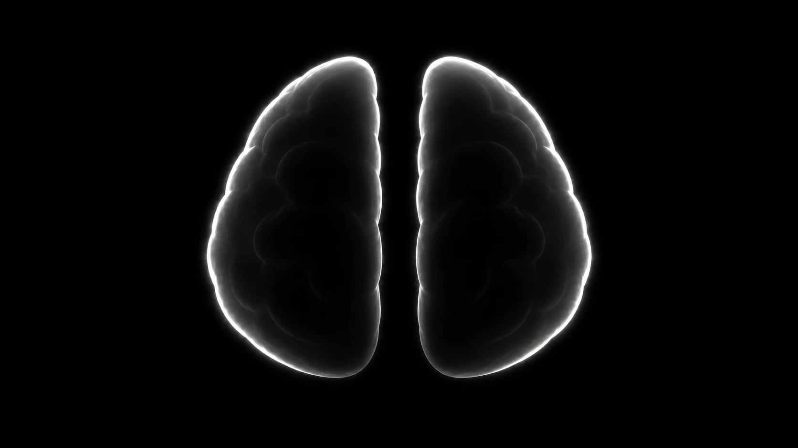

流式输入 · Live input
你
你
speaker 0 · 声纹已匹配
等待你说话…
Top-K 召回
左脑 · 事实
右脑 · 画像
AI 回复
这一轮还没有回复。
待机
暂停
开始对话
Chat
Memory Space
Demo
+
中文
EN
本空间全部记忆
左脑 · 事实
右脑 · 画像
当前对话
下载
新对话

左脑 · 事实
右脑 · 画像
entity
#0000
…
—
新对话
先选一个 Memory Space。对话创建后所属空间不可更改。
创建空间
取消
创建对话
新建 Memory Space
起个名字。磁盘上会出现同名文件夹，记忆从零开始长。
English
中文
取消
创建空间